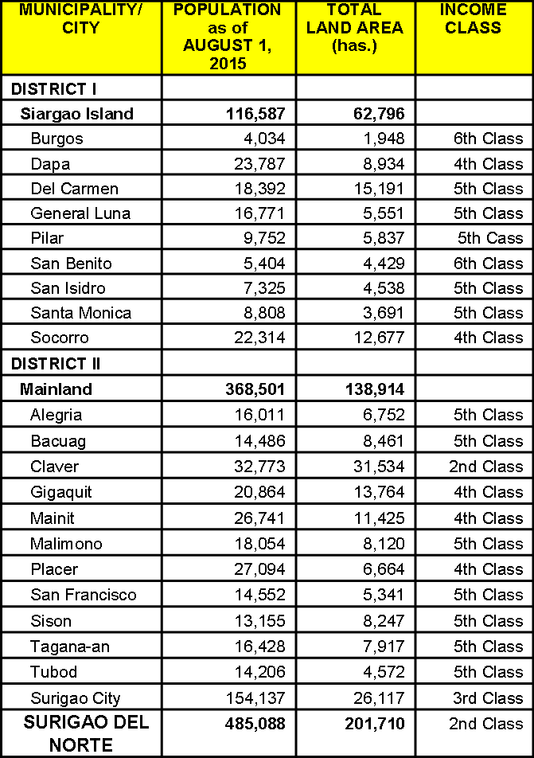

GEOGRAPHY OF SURIGAO DEL NORTE
Political Subdivision
There are twenty (20) municipalities, one (1) city and its capital, 335 barangays and two (2) congressional districts. District I is composed of 9 municipalities in Siargao and Bucas Grande Islands. District II on the other hand has the 11 mainland municipalities and the city of Surigao.
Language and Dialects
Surigaonon, Cebuano, Boholano, Tagalog and English are the major languages/dialects spoken in the province.
Population and Growth Rate
Based on 2015 NSO survey, the province has a total population of 485,088 with an annual growth rate of 1.76%
